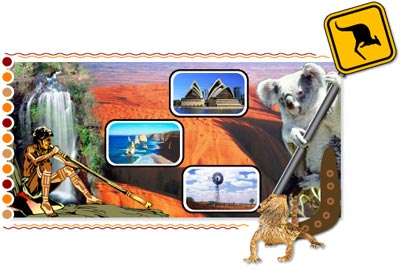

Cosa vuole dire essere australiano?
Write an entry for your Italian blog or website on the topic Cosa vuole dire essere australiano?
In your account, express your personal perception or point of view on the topic.
Discuss other perceptions also, especially well-known stereotypes (for example, advertising and tourism brochures aimed at a foreign audience).
In your response, attempt to provide a realistic picture for your Italian online audience. Try to dispel some myths about Australian culture. Explain how modern-day Australia differs from the stereotypical image that readers may have acquired through previous exposure.
Guideline
- General introduction
- Develop one/two aspect(s) of Australian life. For example:
- sport (football/surf culture).
- cuisine
- family
- lifestyle
- attitude to life (ie ‘she’ll be right, mate!’).
- Select aspect(s) with which you are familiar and/or that are important to you.
- Recommended length: 150 words.
Where appropriate, include examples from texts on Australia to illustrate and support your point of view. If you have covered the topic of Australian identity in your English class, draw on this information to help you with your response. For further examples, clicca Australia testi.
L'Australia nei testi
Visual
Stereotypical images
Music
Great Southern Land (Icehouse)
Film
Going Bush (Cathy Freeman and Deborah Mailman) SBS series
Advertising
The Gruen Transfer (episode 9, 23/07/2008) ABC series
Australian citizenship test
http://www.australiancitizenshiptest.net
Online sites:
http://www.lonelyplanet.com search for Australia
Italian online sites:
http://www.australiaforyou.com
Use the guideline to help you identify relevant information. Use a different chart for each text that you examine. Write notes in Italian.
Alternative
Presentation
You may select to present your work as a podcast or in another format of your choice.
Audience
Italian sister school
Italian family/friend connection (person may be thinking of coming to visit Australia)
Riflessione
You have come to the end of the first topic of the unit. Take a few minutes to think about what you have covered in Identità and your learning techniques and record your thoughts in this worksheet.